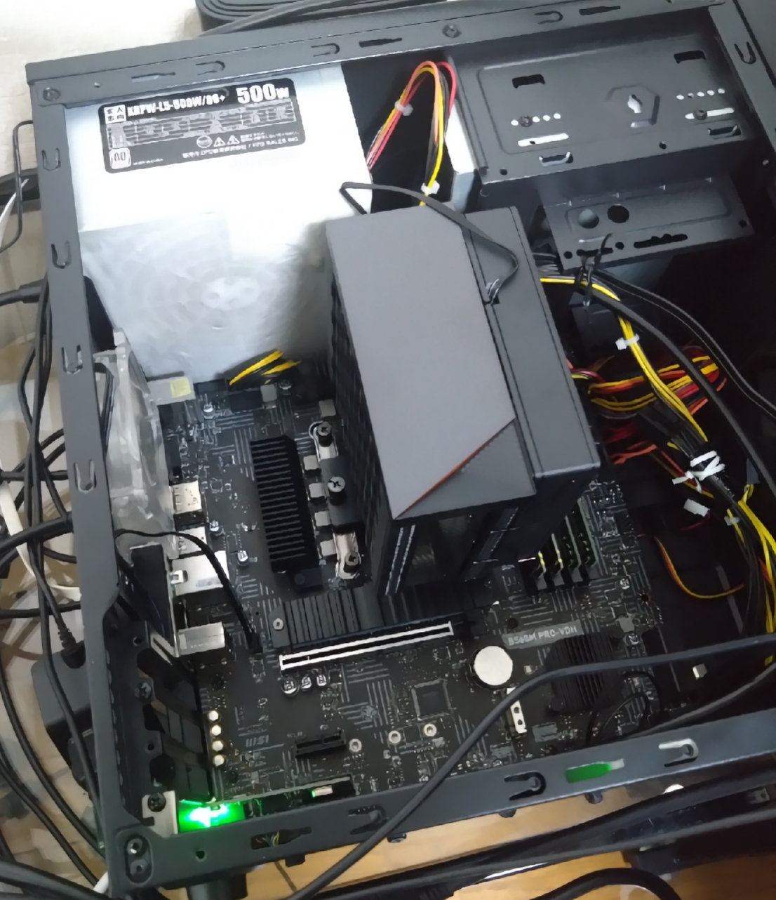
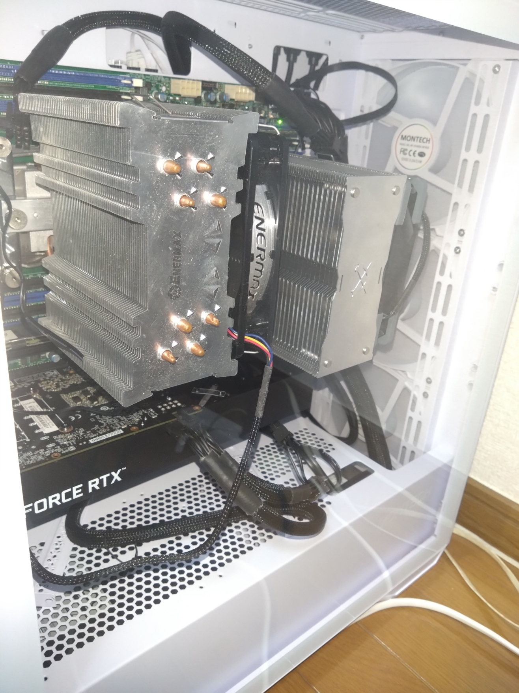
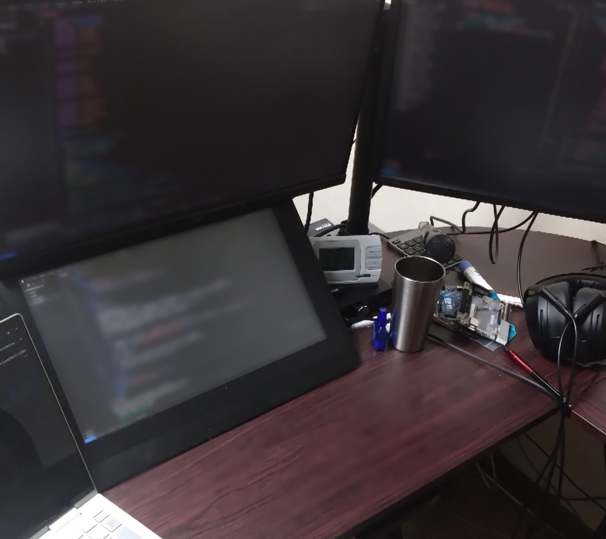
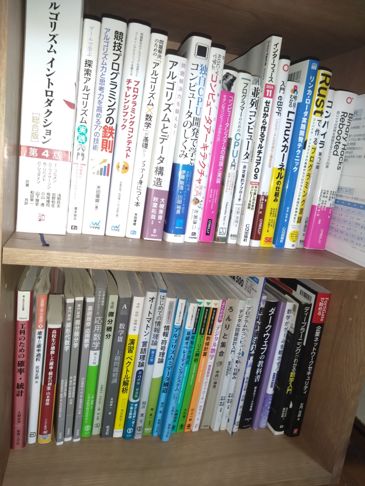
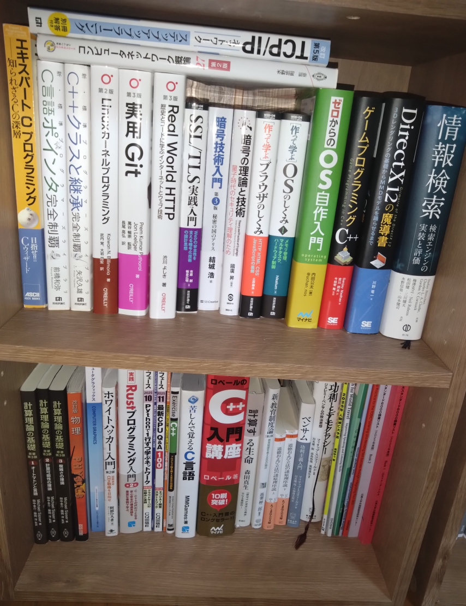
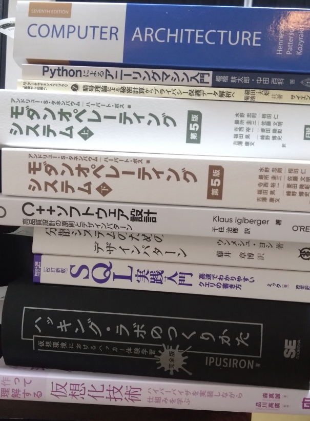

ページ一覧
自己紹介
広島大学情報科学部4年生．
量子化学計算をやってます．
githubに公開しているツールは，実際に自分で使っているものです．
- cpt : 多倍長計算スクリプト言語．なんか色々出来るようになってしまった
- jpp : jsonパーサ/ジェネレータ．例外フリーな設計に書き換えたversion2がある．
- archive : メディアコンテンツ閲覧用webツール
- lib_Clever_Elsie : 競プロ用ライブラリ．rbtree/matrix/fftも含めて完全版．workが競プロ用環境．
- 得意分野: コンピュータの気持ちでプログラミングすること
- GitHub: clever-elsie
- AtCoder: CleverElsie（水色，最近はほぼやってない）
- 応用情報技術者(2025年秋-12/25合格)
- Fixstars高速化コンテスト2026 2位(解説記事)
持ってる計算機
- 自作PC1: Core i5-11400, DDR4-24GB, 自作PC2とPCIe x1 1Gbps接続
- 自作PC2: Xeon E5-2650v4 デュアルソケット, DDR4-128GB, RTX3060-12GB
- ノートパソコン: Core i7-1250U, DDR4-16GB



本棚など
読んだか読んでないかは知る人ぞ知る．

